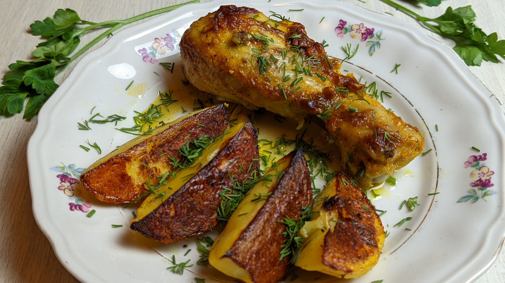

Home
Buffalo Chicken and Roasted Potato

Buffalo Chicken Roasted Potato: Crispy, Spicy & Cheesy Buffalo Chicken Potatoes
Ingrediants:
- 4 medium potatoes, cubed
- 2 cups cooked chicken, shredded
- ½ cup buffalo sauce
- 1 cup shredded cheddar cheese
- 2 tbsp olive oil
- ½ tsp garlic powder
- ½ tsp paprika
- Salt and black pepper, to taste
- 2 tbsp ranch or blue cheese dressing
- 2 tbsp chopped green onions
- 1 tbsp chopped parsley
Steps:
- Preheat the oven to 220°C (425°F).
- Toss cubed potatoes with olive oil, garlic powder, paprika, salt, and pepper.
- Spread potatoes on a baking sheet and roast for 25–30 minutes, turning halfway through, until golden and crispy.
- Mix shredded chicken with buffalo sauce.
- Remove potatoes from the oven and top with buffalo chicken and shredded cheddar.
- Return to the oven for 5–7 minutes, until the cheese melts.
- Drizzle with ranch or blue cheese dressing.
- Garnish with green onions and parsley before serving.